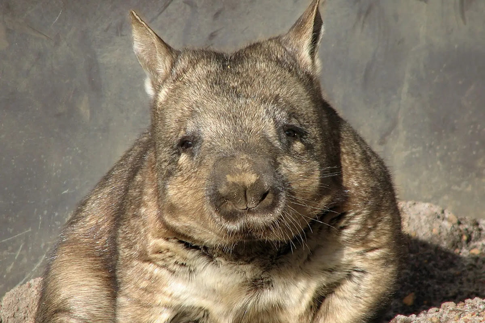

Northern Hairy-nosed Wombat Lasiorhinus krefftii Northern Hairy-nosed Wombats are one of the world's most endangered mammals. They are distinguished by their broad heads, large noses covered with fine hairs, and soft, grey fur. These wombats are known for their burrowing habits and nocturnal lifestyle.

Habitat
Northern Hairy-nosed Wombats are found in a small area of Epping Forest National Park in Queensland, Australia. They prefer grassy woodland habitats with sandy soils that are suitable for burrowing.
Diet
The diet of Northern Hairy-nosed Wombats primarily consists of native grasses. They feed on various species of grass, including spear grass and tussock grass, which provide the necessary nutrients and moisture for their survival.
Conservation Status
Northern Hairy-nosed Wombats are critically endangered, with only a small population remaining. Major threats include habitat loss, predation by introduced species, and competition for food. Conservation efforts focus on habitat protection, population monitoring, and research on reproductive biology.
How to Help
You can help protect Northern Hairy-nosed Wombats by supporting conservation organizations, advocating for habitat preservation, and raising awareness about their endangered status. Donations to wildlife conservation groups and participation in conservation projects can significantly contribute to their survival.
"Saving Australia's Endangered, Together for a Wilder Future"